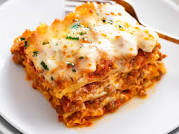

Classic Homemade Lasagna Recipe
Description:
Homemade lasagna is the ultimate comfort food. Layered with rich, hearty meat sauce, creamy béchamel, tender pasta, and gooey melted cheese, it's a dish that's perfect for family gatherings or a cozy night in. This recipe yields a mouthwatering lasagna that's sure to become a family favorite.

Ingredients:
For the meat sauce
- pound ground beef
- pound ground Italian sausage
- medium onion, finely chopped
- 3 cloves garlic, minced
- can (28 ounces) crushed tomatoes
- can (14 ounces) tomato sauce
- 2 tablespoons tomato paste
- 2 teaspoons dried basil
- teaspoon dried oregano
- Salt and pepper to taste
For the Bechamel Sauce
- 1/2 cup unsalted butter
- 1/2 cup all-purpose flour
- 4 cups whole milk
- 1/4 teaspoon nutmeg
- and pepper to taste
Other Ingredients
- lasagna noodles, cooked al dente
- 3 cups shredded mozzarella cheese
- 1 cup grated Parmesan cheese
- Fresh basil leaves for garnish (optional)
Steps
Prepare the Meat sauce
Steps:
- Prepare the Meat Sauce:
- In a large skillet, brown the ground beef and Italian sausage over medium heat until cooked through.
- Add the chopped onion and garlic, sauté until they are soft and translucent.
- in the crushed tomatoes, tomato sauce, and tomato paste. Add dried basil, dried oregano, salt, and pepper. Simmer for about 20 minutes, stirring occasionally. Remove from heat.
- Make the Béchamel Sauce:
- In a medium saucepan, melt the butter over medium heat.
- Stir in the flour to create a roux. Cook for a couple of minutes, stirring constantly.
- Slowly whisk in the milk, making sure there are no lumps.
- Add nutmeg, salt, and pepper. Continue to cook and stir until the sauce thickens, about 10-15 minutes. Remove from heat.
- Preheat the Oven:
Preheat your oven to 350°F (175°C).
- Assemble the Lasagna:
- Spread a thin layer of the meat sauce in the bottom of a 9x13-inch baking dish to prevent sticking.
- Place a layer of cooked lasagna noodles over the sauce.
- Spread about a third of the meat sauce over the noodles.
- Drizzle a quarter of the béchamel sauce over the meat sauce.
- Sprinkle with a third of the mozzarella and Parmesan cheeses.
- Repeat this layering process two more times, ending with a final layer of noodles, béchamel sauce, and remaining cheese.
- Bake:
- Cover the baking dish with foil and bake for 25 minutes.
- Remove the foil and bake for an additional 25-30 minutes, or until the top is golden and bubbly.
- Rest and Serve:
- Let the lasagna rest for 10-15 minutes before cutting into it. This allows it to set and makes it easier to serve.
- Garnish with fresh basil leaves if desired.
- Enjoy: Serve your homemade lasagna with a fresh garden salad and some garlic bread for a delicious and satisfying meal. Enjoy!